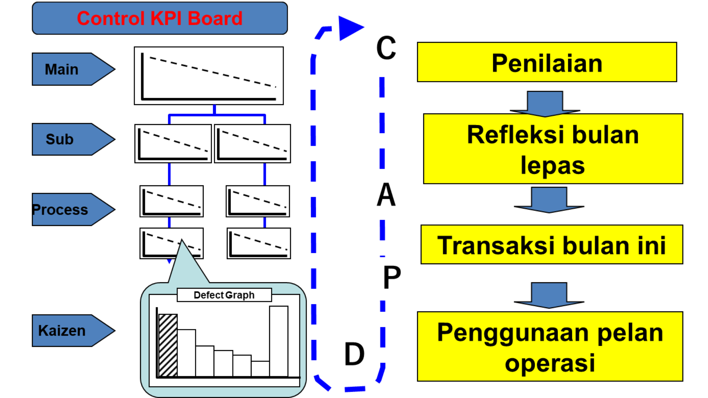
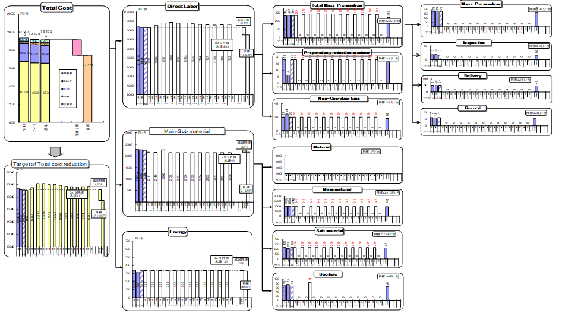
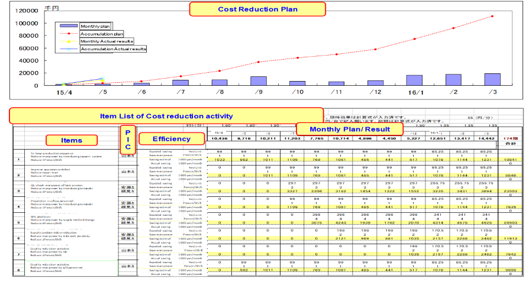
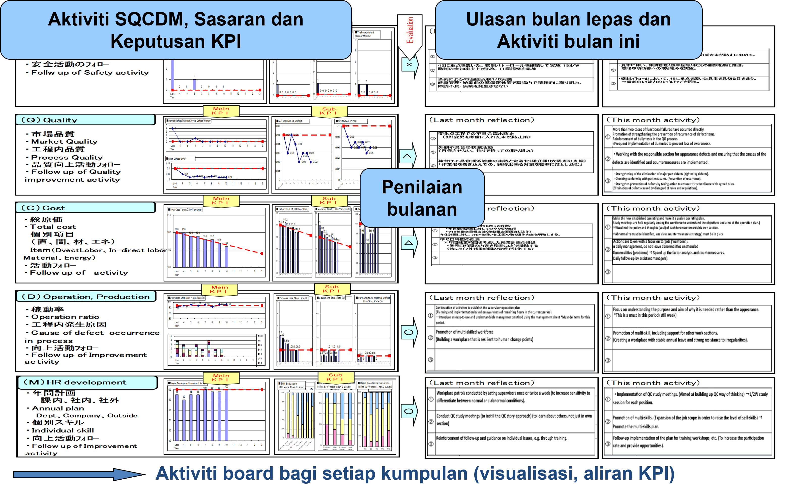

Pelan Operasi Jabatan
Apa itu Operation Plan?
- Penyediaan senario (pelan khusus) untuk mencapai setiap sasaran S, Q, C, D, dan M. (Bukan pelan operasi untuk kilang)
- Ini adalah aktiviti untuk Meningkatkan Indeks (sasaran berangka) yang berkaitan dengan Produktiviti.
Department Operation Plan
Objektif
- Pelan pengurusan untuk membuat keuntungan dalam unit organisasi Jabatan dan Seksyen = Pencapaian Dasar@Polisi.
Matlamat
- Menjelaskan kelemahan (isu dan masalah) jabatan dan seksyen (Pengurusan Genba menggunakan Visual)
"Bertindak dengan kesedaran diri
sebagai wakil Pengurusan"
Operation Plan
Aliran maklumat Operation Plan
| Item | In Charge | Content |
|---|---|---|
| Production Plan | Head office, production control | Unit volume of each model |
| Equipment operation plan | Each plant, Engineering | Tact time, Overtime, Holiday Operation |
| Operasi (bekerja) Pelan (Merealisasikan Sasaran Dasar) | Each Dept. and Section | Buat Senario yang Selamat dan Menguntungkan berdasarkan keupayaan (situasi) > Bahagian anda sendiri dan jabatan anda sendiri. (lihat indeks bulanan & tahunan) |
Department Operation Plan〔 during Changing point 〕
MAN
MATERIAL
MACHINE
Department Operation Plan〔Annual〕
Keputusan Pengurusan (PDCA)

Rujukan

- Kos Bahan Pengeluaran Dalaman - Kos Bahan, Kos Cat, Minyak dan Adhesives
- Kos Pemprosesan Berkadar Dalaman - Buruh Langsung, Tenaga, Bahan Habis Pakai, Alat, Kos Kerosakan
- Kos Pemprosesan Tetap dalaman - Kos Buruh Tidak Langsung, Kos Penyelenggaraan, Kos Susut Nilai Peralatan, Kos Operasi, Cukai, Insurans, Kos Operasi Jabatan
- Pelaburan dalam Peralatan Baharu - Pelaburan Khusus, Pelaburan Loji, Pembinaan Bangunan Baru, dsb.
- Jumlah pengurangan kos
- Kos buruh langsung - Kos buruh tidak langsung
- Tenaga - Kos bahan (Part, Alat, Lain-lain)
Rujukan

Result Management
